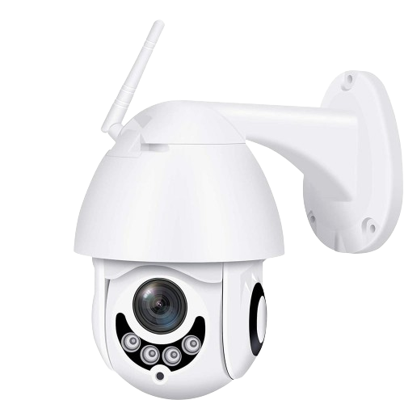
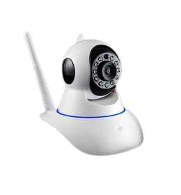

NUTRIKA
Innovating Today for a Brighter Tomorrow

Rreth Nesh
Objektivi Ynë
Kamera e Robotit Guardian- Nutrika, një zgjidhje inovative e krijuar për të rritur sigurinë dhe sigurinë në mjediset shkollore. I frymëzuar nga perëndesha mitologjike Nutrika nga mitologjia ilire, projekti ynë synon të mbrojë fëmijët me teknologjinë më të fundit. Projekti Trita kërkon të adresojë nevojën urgjente për përmirësimin e masave të sigurisë në shkolla. Objektivi ynë është të zhvillojmë një robot-kamerë që jo vetëm monitoron ambientet e shkollës, por gjithashtu reagon me shpejtësi ndaj kërcënimeve të mundshme, duke siguruar një mjedis të sigurt mësimi për studentët. Trita, perëndesha e nderuar e mitologjisë ilire, shërben si frymëzim pas projektit tonë. E njohur për rolin e saj si mbrojtëse e fëmijëve, Trita mishëron cilësitë e vigjilencës, kujdestarisë dhe kujdesit të palëkundur. Duke u nisur nga kjo mitologji, roboti-kamera jonë trashëgon shikimin vigjilent dhe përkushtimin e Tritës për të mbrojtur të cënuarit.
Adresimi i Sfidave të Nxënësve: Objektivi ynë kryesor është të krijojmë një ambient mbështetës për nxënësit duke përdorur teknologjinë e avancuar të kamerës për të identifikuar dhe reaguar ndaj çështjeve si stresi, ankthi, grindjet dhe zullumet.
Ofrimi i Mbështetjes Kohore: Synojmë të pajisim psikologët shkollorë dhe administratorët me të dhëna në kohë reale për të ndërhyrë menjëherë dhe ofruar mbështetje të përshtatshme për nxënësit në nevojë.
Problemi që Synojmë të Zgjidhim
Grindjet dhe shqetësimet për Sigurinë: Rastet e zullumeve dhe grindjeve shpesh mund të mbeten pa u vërejtur ose pa raportuar, duke ndikuar në sigurinë dhe shëndetin emocional të nxënësve.
Zgjidhja Jonë: Sistemi i Kameras Inovative
Monitorimi në Kohë Reale: Sistemi ynë i kamerës përdor algoritme të avancuara të vizionit kompjuterik dhe mësimit të makinave për të monitoruar sjelljen e nxënësve dhe për të zbuluar shenjat e stresit, ankthit, grindjeve, ose sulumeve.
Njoftimet Në Kohë Reale: Pas zbulimit, sistemi dërgon njoftime të menjëhershme tek personeli i caktuar (p.sh., psikologë shkollorë, administratorë) për ndërhyrje të menjëhershme.
Duke ofruar një qasje proaktive ndaj sigurisë së nxënësve, sistemi ynë synon të krijojë një ambient mbështetës dhe të sigurt për të gjithë nxënësit.
Konsideratat Etike dhe Mbrojtjet e Privatësisë
Një Përfaqësim i Privatësisë: Ne vlerësojmë privatësinë dhe konfidencialitetin e nxënësve. Sistemi ynë respekton udhëzimet etike dhe standardet rregullatore për të mbrojtur të dhënat e ndjeshme të nxënësve.
Bashkëpunimi dhe Ndikimi
Bashkëpunimi me mësuesit dhe psikologët: Ne punojmë ngushtë me psikologët e shkollave, mësuesit dhe nxënës për të siguruar që sistemi ynë jetë efektiv, respektues dhe në përputhje me nevojat e komunitetit shkollor.
Ndikimi Pozitiv: Duke hasur sfidat e nxënësve në mënyrë të menjëhershme, synojmë të krijojmë një ndikim pozitiv në shëndetin mendor, performancën akademike dhe mirëqenien e përgjithshme të nxënësve.
Vizioni për të Ardhmen:
Vizioni ynë është që të shohim sistemin tonë të kameras të zbatuar në shkolla në të gjithë botën, duke krijuar ambiente më të sigurta dhe më mbështetëse për nxënësit për të përparuar akademikisht dhe emocionalisht.
Aftësitë e Nutrikës
Identifikimi i konflikteve 90%
Monitorimi i sjelljes & Analiza e të dhënave 85%
Ndërmjetësimi dhe ndërhyrja 73%
në shkollë
ndaj stafit shkollor
i ri
mitologjik
Kamerat Nutrika-AI
- Kamera ekonomike
- Basic camera (veçoritë bazë si zbulimi i lëvizjes; mund të mos mbështesin funksione të avancuara si njohja e fytyrës ose gjurmimi i objekteve.)
- 772p relosution
- DVR- 1TB/2TB
- Sensore termike
-
300 €
çmim ekonomik
- Kamera ADVANCED
- Kamera 4k (Njohja e fytyrës, gjurmimi i objekteve dhe aftësitë analitike për analizën e sjelljes.)
- 1080p resolution
- NVR- 4TB/8TB
- Sensore termike + sensore ultrasonike
-
900-1200€
pagesë (PayPal)
Informacione dhe Udhezime mbi Projektin Titra dhe Kameren Nutrika

Projekti Trita: Mitologjia ilire
Kamera e Robotit Guardian, një zgjidhje inovative e krijuar për të rritur sigurinë dhe sigurinë në mjediset shkollore. I frymëzuar nga perëndesha mitologjike Trita nga mitologjia ilire, projekti ynë synon të mbrojë fëmijët me teknologjinë më të fundit. Dallimi mes Trites dhe Nutrikes eshte se Trita eshte perendesha e shendetit- me te ne simbolizojme shendetin mendor te femijeve; Nutrika eshte perendesha qe mbron femijet; nderthurja e ketyre dy perendeshave solli idene e Projektit Trita me Robotin Guardian Nutrika, duke risjelle me nga afer mitologjine tone ilire.
Projekti Trita kërkon të adresojë nevojën urgjente për përmirësimin e masave të sigurisë në shkolla. Objektivi ynë është të zhvillojmë një robot-kamerë që jo vetëm monitoron ambientet e shkollës, por gjithashtu reagon me shpejtësi ndaj kërcënimeve të mundshme, duke siguruar një mjedis të sigurt mësimi për studentët. Trita, perëndesha e nderuar e mitologjisë ilire, shërben si frymëzim pas projektit tonë. E njohur për rolin e saj si mbrojtëse e fëmijëve, Trita mishëron cilësitë e vigjilencës, kujdestarisë dhe kujdesit të palëkundur. Duke u nisur nga kjo mitologji, roboti-kamera jonë trashëgon shikimin vigjilent dhe përkushtimin e Tritës për të mbrojtur të cënuarit.

Detaje teknike:

Robot-kamera jonë Gardian kombinon teknologjinë më të fundit me veçoritë e avancuara për të përmbushur detyrat e saj mbrojtëse. I pajisur me vizion kompjuterik dhe aftësi të inteligjencës artificiale, ai mund të zbulojë incidente të ndryshme, duke përfshirë bullizmin dhe zënkat me saktësi dhe shpejtësi të jashtëzakonshme. Për të zhvilluar një sistem të suksesshëm për detektimin e sjelljeve të dëmshme në ambientet shkollore, kamera e përdorur duhet të ketë disa karakteristika të veçanta:
1. **Rrezja e detektimit**: Kamera duhet të ketë një rreze detektimi të mjaftueshme për të mbuluar ambientin në mënyrë efektive. Kjo përfshin një kënd të gjërë të pamjes dhe një distancë të mjaftueshme për të identifikuar sjellje dhe veprime që ndodhin brenda ambientit të shkollës.
2. **Rezolucioni dhe cilësia e imazhit**: Për të siguruar një detektim të saktë dhe të qartë të sjelljeve, kamera duhet të ketë një rezolucion të lartë dhe një cilësi të mirë të imazhit. Kjo përfshin aftësinë për të kapur imazhe të qarta dhe të detajuara, duke përfshirë ngjyrat dhe format e objekteve dhe personave në pamje.
3. **Stabiliteti dhe rrotullimi**: Kamera duhet të jetë e pajisur me një mekanizëm të rrotullimit që lejon lëvizjen e saj përreth një qendre të caktuar. Ky rrotullim duhet të jetë i qëndrueshëm dhe i përshtatshëm për të siguruar një kryerje të plotë të ambientit dhe detektimin e sjelljeve në të gjitha këndet e pamjes.
4. **Fuqia dhe durimi i baterisë**: Për një përdorim të afërt dhe të qëndrueshëm në terren, kamera duhet të ketë një fuqi dhe një durim të mirë të baterisë. Kjo përfshin një kapacitet të mjaftueshëm të baterisë për të mbuluar një periudhë të gjatë kohore pa nevojën për rrjedhje të shpeshta të energjisë ose ndërprerje të sistemit.
5. **Përshtatshmëria me mjedisin shkollor**: Kamera duhet të jetë e përshtatshme për të punuar në mjedisin shkollor, duke përfshirë rezistencën ndaj kushteve të jashtme të temperaturës, lagështisë, dhe ndërhyrjeve të mundshme nga studentët ose personeli.
6. **Sistemet e komunikimit dhe kontrollit**: Kamera duhet të jetë e integruar me sistemet e komunikimit dhe kontrollit për të mundësuar transmetimin e informacionit dhe udhëzimet për veprimin e duhur bazuar në zbulimet dhe vlerësimet e bëra nga sistemi i detektimit.
Duke përdorur një kamera të dizajnuar dhe të konfiguruar me këto karakteristika në mendje, është e mundur të zhvillohet një sistem efektiv për detektimin e sjelljeve të dëmshme në ambientet shkollore. Kjo kamera do të luajë një rol kyç në sigurimin e sigurisë dhe mirëqenies së studentëve dhe personelit shkollor.
Elementet e projektimit:
Dizajni i Robot-Kameres Gardian është i ndikuar nga mitologjia e Tritës, duke përfshirë simbole dhe motive që lidhen me mbrojtjen dhe kujdestarinë. Pamja e saj e hijshme dhe futuriste pasqyron si sofistikimin e tij teknologjik ashtu edhe frymëzimin e tij mitologjik.
Funksioni:
Në funksionim, Robot-Kamera Gardian shërben si një kujdestar vigjilent brenda ambienteve të shkollës. Ai monitoron vazhdimisht rrethinën e tij, duke përdorur sensorët dhe algoritmet e tij të avancuara për të identifikuar kërcënimet e mundshme. Me zbulimin, ai mund të ndërhyjë menjëherë ose të lajmërojë autoritetet, duke siguruar reagim në kohë ndaj situatave kritike. Për të detektuar dhunën fizike, si pjesë e një sistemi të bazuar në inteligjencën artificiale, mund të përdorni një kombinim të teknikave të pamjes kompjuterike (computer vision) dhe të mësimit të thellë (deep learning). Këtu është një shpjegim i thjeshtë i procesit:
1. **Koleksionimi i të dhënave**: Fillimisht, ju duhet të mbledhni një sasi të mjaftueshme të të dhënave që përmbajnë video ose imazhe të sjelljes së dhunshme fizike në ambiente shkollore. Këto të dhëna duhet të jenë etiketuara me informacion që identifikon sjelljen e dhunshme.
2. **Përgatitja e të dhënave**: Pasi keni mbledhur të dhënat, duhet t'i përpunoni ato për t'i bërë ato të përshtatshme për të kaluar nëpër një model të mësimit të thellë. Kjo përfshin prerjen e videove në segmente më të vogla, zvogëlimin e rezolutës së tyre, dhe normalizimin e tyre.
3. **Trajnim i modelit të mësimit intensiv**: Përdorni një model të mësimit të thellë, si një rrjet neural konvolucional (CNN), dhe trajtoni të dhënat për të mësuar modelin të njohë tipare të sjelljes së dhunshme fizike. Ky proces përfshin disa faza të trajnimit të modelit, duke përdorur të dhënat e mbledhura.
4. **Vlerësimi i performancës së modelit**: Pas trajnimit, vlerësoni performancën e modelit duke përdorur një grup të veçantë të të dhënave për testim. Kjo ju lejon të shihni sa mirë modeli është në të përballur me të dhëna të reja që nuk i është trajnuar.
v
5. **Integrimi me sistemin e kamerës**: Në këtë fazë, modeli i trajnuar integrohet në sistemin e kamerës për të kryer detektimin e sjelljes së dhunshme fizike në kohë reale. Sistemi i kamerës kap video dhe përdor modelin për të identifikuar sjelljen e dhunshme.
6. **Veprimet e alarmit ose ndërhyrjes**: Nëse modeli identifikon sjellje të dyshimtë, sistemi mund të ndërhyjë duke aktivizuar alarma, duke njoftuar autoritetet shkollore, ose duke ndërmarrë masa të tjera të nevojshme për të menaxhuar situatën.
Kjo është një përshkrim i përgjithshëm i procesit për të krijuar një sistem për të detektuar dhunën fizike në ambientet shkollore duke përdorur inteligjencën artificiale. Gjatë këtij procesi, është e rëndësishme të konsultoheni me ekspertët e fushës së psikologjisë dhe të drejtat e njeriut për të siguruar që sistemi është etik dhe i përshtatshëm për përdorim në ambientet shkollore.
Përfitimet për shkollat:
Zbatimi i Robot-Kamera Gardian ofron përfitime të shumta për shkollat. Ai rrit sigurinë, duke u siguruar edukatorëve, prindërve dhe studentëve paqe mendore. Duke nxitur një mjedis të sigurt mësimi, ai promovon mirëqenien e studentëve dhe suksesin akademik.
Në të vërtetë, ndërtimi i një roboti për të njohur ngacmimet, sherret dhe urgjencat përmes vizionit kompjuterik është një detyrë komplekse që kërkon planifikim dhe zbatim të kujdesshëm. Këtu është një përmbledhje e komponentëve dhe konsideratave kryesore të përfshira:
1. **Sistemi i kamerës**: Roboti duhet të jetë i pajisur me një aparat fotografik ose kamera të shumta për të kapur të dhëna vizuale nga rrethina e tij. Këto kamera duhet të kenë rezolucion dhe fushëpamje të përshtatshme për të monitoruar në mënyrë efektive mjedisin.
2. **Mbledhja dhe etiketimi i të dhënave**: Sasi të mëdha të të dhënave të etiketuara janë thelbësore për trajnimin e modeleve të mësimit të makinerive për të njohur me saktësi situata të ndryshme. Kjo përfshin kapjen e pamjeve video të skenarëve të ndryshëm (ngacmim, zënka, emergjenca) dhe shënimin e tyre me etiketat përkatëse.
3. **Teknikat e vizionit kompjuterik**: Teknika të ndryshme të vizionit kompjuterik, të tilla si zbulimi i objekteve, njohja e fytyrës dhe njohja e veprimeve, do të përdoren për të analizuar të dhënat e videos së kapur. Këto teknika do ta ndihmojnë robotin të identifikojë ngjarje ose sjellje specifike me interes në kohë reale.
4. **Sensorë shtesë**: Sensoren Termike MLX90614:
MLX90614 është një termometër jo-kontaktues i infra të kuq për matjen e temperaturës. Ai mund të matë temperaturën e një objekti pa bërë kontakt fizik me të.
Ky sensor përdor radiacionin infra të kuq që dalin nga një objekt për të përcaktuar temperaturën e tij. Është veçanërisht i dobishëm për të matur temperaturën e objekteve që janë të vështira për t'u arritur ose në lëvizje.
MLX90614 komunikon përmes protokollit I2C (Inter-Integrated Circuit), çka e bën të lehtë interfesimin me mikrokontrollorë si Raspberry Pi.
Sensoren Ultrasonike të Distancës HC-SR04:
HC-SR04 është një sensor ultrasonik i distancës që përdor valë ultrasonike për të matur distancën.
Vepron duke dërguar impulsat ultrasonikë dhe duke matur kohën që i duhet impulsave për të kthyer pasi të godasin një objekt. Duke llogaritur dallimin e kohës, sensori mund të përcaktojë distancën në objektin.
HC-SR04 zakonisht ka dy pine: një për shkaktimin e impulsit ultrasonik dhe një për pranimin e echos. Ai vepron në një frekuencë prej rreth 40 kHz.
Ky sensor përdoret zakonisht në projekte robotike, automatizim dhe projekte të Internetit të Gjërave (IoT) për detyra si zbulimi i pengesave, matja e distancës dhe zbulimi i lëvizjes.
5. **Programimi dhe marrja e vendimeve**: Softueri i robotit, me gjasë i implementuar në Python për shkak të mbështetjes së tij të gjerë për bibliotekat e mësimit të makinerive dhe vizionit kompjuterik, do të përpunojë të dhënat vizuale dhe audio të kapur nga sensorët. Bazuar në rezultatet e analizës, roboti do të programohet për të ndërmarrë veprimet e duhura, si ndërhyrja në situatë, ofrimi i ndihmës ose alarmimi i autoriteteve.
6. **Integrimi dhe vendosja**: Pasi të zhvillohet, sistemi i robotëve do të duhet të integrohet në mjedisin e tij operacional dhe të vendoset në mënyrë efektive. Kjo mund të përfshijë testimin dhe rregullimin e mirë të sistemit për të siguruar performancë të besueshme në skenarët e botës reale.
Duke integruar këto komponentë dhe konsiderata, roboti mund të njohë në mënyrë efektive dhe t'u përgjigjet incidenteve të ngacmimit, luftimeve dhe emergjencave, duke kontribuar në mjedise më të sigurta dhe më të sigurta.
Aplikacioni që kontrollon sistemin e kamerës dhe përpunon të dhënat luan një rol vendimtar në funksionalitetin e përgjithshëm të robotit. Ja se si funksionon:
1. **Ndërfaqja e kontrollit**: Aplikacioni ofron një ndërfaqe miqësore për përdoruesit për kontrollin dhe monitorimin e robotit dhe sistemit të tij të kamerës. Përdoruesit mund të aksesojnë aplikacionin përmes pajisjeve të ndryshme si telefonat inteligjentë, tabletët ose kompjuterët.
2. **Përpunimi i të dhënave**: Aplikacioni përpunon të dhënat e kapura nga sistemi i kamerës në kohë reale duke përdorur algoritmet e shikimit kompjuterik. Kjo përfshin analizimin e pamjeve video dhe sinjaleve audio për të zbuluar incidente të ngacmimit, zënkave ose emergjencave.
3. **Njohja e situatës**: Bazuar në rezultatet e analizës, aplikacioni identifikon dhe klasifikon situata të ndryshme, si incidente ngacmimi, grindje fizike ose situata emergjente. Ky informacion përdoret për të përcaktuar veprimet e duhura që duhen ndërmarrë nga roboti.
4. **Autoritetet paralajmëruese**: Në rast emergjencash ose incidentesh serioze, aplikacioni është programuar për të alarmuar autoritetet përkatëse ose individët e caktuar. Kjo mund të përfshijë dërgimin e njoftimeve me email, mesazhe me tekst ose nëpërmjet një sistemi të centralizuar monitorimi.
5. ** Ruajtja dhe analiza e të dhënave **: Aplikacioni gjithashtu trajton ruajtjen dhe analizën e të dhënave të kapura për referencë dhe analizë në të ardhmen. Kjo përfshin ruajtjen e pamjeve video dhe meta të dhënave të lidhura me çdo incident për qëllime rishikimi dhe raportimi.
6. **Monitorimi dhe kontrolli nga distanca**: Aplikacioni mundëson monitorimin dhe kontrollin në distancë të robotit dhe sistemit të tij të kamerës, duke i lejuar përdoruesit të aksesojnë burimet video live dhe të kontrollojnë lëvizjet dhe veprimet e robotit nga kudo me një lidhje interneti.
7. **Integrimi me sisteme të tjera**: Aplikacioni mund të integrohet me sisteme ose platforma të tjera, si sistemet e sigurisë, sistemet e menaxhimit të shkollave ose sistemet e reagimit ndaj emergjencave, për të përmirësuar aftësitë e koordinimit dhe reagimit.
Për sa i përket vendit ku dërgohen të dhënat, kjo varet nga zbatimi dhe kërkesat specifike të projektit. Në disa raste, të dhënat mund të përpunohen dhe ruhen lokalisht në robot ose brenda një rrjeti të mbyllur. Në raste të tjera, veçanërisht për qëllime monitorimi dhe sinjalizimi në distancë, të dhënat mund të dërgohen në serverë të bazuar në renë kompjuterike ose në qendra të centralizuara monitorimi për analizë dhe përgjigje.

E pajisur me AI
Përveç aftësive të saj për survejim, kamera/roboti gjithashtu do të jetë i fuqizuar nga inteligjenca artificiale (AI) për të përmirësuar funksionalitetin dhe efektivitetin e saj. Teknologjia AI e integruar në robot do të lejojë analizën e avancuar të të dhënave që grumbullohen, duke lejuar njohurite më të hollësishme në lidhje me gjendjet emocionale dhe sjelljet e nxënësve/mësuesve. Algoritmet AI do të trajtohen për të njohur modelet dhe për të zbuluar shenjat e distresit, stresit, ose sjelljeve të pazakonta. Për shembull, roboti mund të programohet për të identifikuar shprehjet fytyrësore të lidhura me trishtimin ose ankthin. Ai gjithashtu mund të analizojë tonin e zërit dhe gjuhën e trupit për të vlerësuar gjendjen emocionale të individëve. Për më tepër, AI do të lejojë robotin të përshtatet dhe të mësojë të dhënat që grumbullohen. Kjo do të thotë që ai mund të përmirësojë vazhdimisht aftësinë e tij për të identifikuar dhe për të reaguar në situata të ndryshme, duke ofruar mbështetje gjithnjë e më të saktë dhe në kohë për ata që kanë nevojë. Aftësitë e fuqizuara nga AI të robotit,gjithashtu mund të zgjasin përtej thjeshtë survejimit dhe zbulimit. Ai mund të ofrojë kthime dhe ndërhyrje në kohë reale, siç është paralajmërimi i mësuesve ose administratorëve të shkollës kur zbulojne shenja të distresit ose stresit.Në përgjithësi,
integrimi i teknologjisë AI në kameren-robot e përmirëson aftësinë e saj për të përmbushur rolin si një mjet i survejimit dhe mbështetjes në ambientin e klasës, duke kontribuar në mirëqenien dhe sigurinë e nxënësve dhe mësuesve në të njëjtën kohë.
Ky projekt mund të ofrojë disa përfitime për mjedisin shkollor dhe të jetë veçanërisht i favorshëm për drejtorin dhe psikologun e shkollës:
1. **Rrezja e detektimit**: Kamera duhet të ketë një rreze detektimi të mjaftueshme për të mbuluar ambientin në mënyrë efektive. Kjo përfshin një kënd të gjërë të pamjes dhe një distancë të mjaftueshme për të identifikuar sjellje dhe veprime që ndodhin brenda ambientit të shkollës.
2. **Rezolucioni dhe cilësia e imazhit**: Për të siguruar një detektim të saktë dhe të qartë të sjelljeve, kamera duhet të ketë një rezolucion të lartë dhe një cilësi të mirë të imazhit. Kjo përfshin aftësinë për të kapur imazhe të qarta dhe të detajuara, duke përfshirë ngjyrat dhe format e objekteve dhe personave në pamje.
3. **Stabiliteti dhe rrotullimi**: Kamera duhet të jetë e pajisur me një mekanizëm të rrotullimit që lejon lëvizjen e saj përreth një qendre të caktuar. Ky rrotullim duhet të jetë i qëndrueshëm dhe i përshtatshëm për të siguruar një kryerje të plotë të ambientit dhe detektimin e sjelljeve në të gjitha këndet e pamjes.
4. **Fuqia dhe durimi i baterisë**: Për një përdorim të afërt dhe të qëndrueshëm në terren, kamera duhet të ketë një fuqi dhe një durim të mirë të baterisë. Kjo përfshin një kapacitet të mjaftueshëm të baterisë për të mbuluar një periudhë të gjatë kohore pa nevojën për rrjedhje të shpeshta të energjisë ose ndërprerje të sistemit.
5. **Përshtatshmëria me mjedisin shkollor**: Kamera duhet të jetë e përshtatshme për të punuar në mjedisin shkollor, duke përfshirë rezistencën ndaj kushteve të jashtme të temperaturës, lagështisë, dhe ndërhyrjeve të mundshme nga studentët ose personeli.
6. **Sistemet e komunikimit dhe kontrollit**: Kamera duhet të jetë e integruar me sistemet e komunikimit dhe kontrollit për të mundësuar transmetimin e informacionit dhe udhëzimet për veprimin e duhur bazuar në zbulimet dhe vlerësimet e bëra nga sistemi i detektimit.
Duke përdorur një kamera të dizajnuar dhe të konfiguruar me këto karakteristika në mendje, është e mundur të zhvillohet një sistem efektiv për detektimin e sjelljeve të dëmshme në ambientet shkollore. Kjo kamera do të luajë një rol kyç në sigurimin e sigurisë dhe mirëqenies së studentëve dhe personelit shkollor.
1. **Koleksionimi i të dhënave**: Fillimisht, ju duhet të mbledhni një sasi të mjaftueshme të të dhënave që përmbajnë video ose imazhe të sjelljes së dhunshme fizike në ambiente shkollore. Këto të dhëna duhet të jenë etiketuara me informacion që identifikon sjelljen e dhunshme.
2. **Përgatitja e të dhënave**: Pasi keni mbledhur të dhënat, duhet t'i përpunoni ato për t'i bërë ato të përshtatshme për të kaluar nëpër një model të mësimit të thellë. Kjo përfshin prerjen e videove në segmente më të vogla, zvogëlimin e rezolutës së tyre, dhe normalizimin e tyre.
3. **Trajnim i modelit të mësimit intensiv**: Përdorni një model të mësimit të thellë, si një rrjet neural konvolucional (CNN), dhe trajtoni të dhënat për të mësuar modelin të njohë tipare të sjelljes së dhunshme fizike. Ky proces përfshin disa faza të trajnimit të modelit, duke përdorur të dhënat e mbledhura.
4. **Vlerësimi i performancës së modelit**: Pas trajnimit, vlerësoni performancën e modelit duke përdorur një grup të veçantë të të dhënave për testim. Kjo ju lejon të shihni sa mirë modeli është në të përballur me të dhëna të reja që nuk i është trajnuar. v 5. **Integrimi me sistemin e kamerës**: Në këtë fazë, modeli i trajnuar integrohet në sistemin e kamerës për të kryer detektimin e sjelljes së dhunshme fizike në kohë reale. Sistemi i kamerës kap video dhe përdor modelin për të identifikuar sjelljen e dhunshme.
6. **Veprimet e alarmit ose ndërhyrjes**: Nëse modeli identifikon sjellje të dyshimtë, sistemi mund të ndërhyjë duke aktivizuar alarma, duke njoftuar autoritetet shkollore, ose duke ndërmarrë masa të tjera të nevojshme për të menaxhuar situatën.
1. **Siguria**: Duke vendosur një robot të pajisur me aftësi të avancuara mbikëqyrjeje, shkolla mund të rrisë sigurinë dhe sigurinë në kampus. Sistemi mund të zbulojë dhe t'u përgjigjet incidenteve të ngacmimit, zënkave dhe emergjencave në kohë reale, duke ndihmuar në parandalimin e përshkallëzimit dhe sigurimin e një mjedisi më të sigurt mësimi për studentët dhe stafin.
2. **Ndërhyrja e hershme**: Aftësia e sistemit për të njohur dhe ndërhyrë në situata të tilla si ngacmimi ose zënkat lejon ndërhyrjen e hershme, e cila mund të ndihmojë në adresimin e çështjeve përpara se ato të përshkallëzohen. Kjo qasje proaktive mund të kontribuojë në nxitjen e një kulture pozitive shkollore dhe parandalimin e përhapjes së sjelljeve negative.
3. **Vështrime të drejtuara nga të dhënat**: Të dhënat e mbledhura nga sistemi mund të ofrojnë njohuri të vlefshme për modelet e sjelljes dhe incidentet brenda mjedisit shkollor. Drejtori dhe psikologu mund t'i përdorin këto të dhëna për të identifikuar tendencat, për të adresuar çështjet themelore dhe për të zbatuar ndërhyrje të synuara ose programe mbështetëse për të promovuar sjellje pozitive dhe mirëqenie midis nxënësve.
4. **Mbështetje për Vendimmarrje**: Sinjalizimet dhe të dhënat në kohë reale të ofruara nga sistemi mund të mbështesin proceset e vendimmarrjes për ekipin drejtues të shkollës. Drejtori mund ta përdorë këtë informacion për të marrë vendime të informuara në lidhje me shpërndarjen e burimeve, veprimet disiplinore dhe strategjitë e ndërhyrjes, ndërsa psikologu mund ta përdorë atë për të përshtatur shërbimet mbështetëse dhe programet e këshillimit për të përmbushur nevojat e nxënësve.
5. **Marrja e burimeve**: Duke automatizuar proceset e vëzhgimit dhe zbulimit të incidenteve, sistemi mund të ndihmojë në optimizimin e shpërndarjes së burimeve brenda shkollës. Në vend që të mbështeten vetëm në monitorimin dhe ndërhyrjen manuale, drejtori dhe psikologu mund të përqendrojnë kohën dhe vëmendjen e tyre në adresimin e çështjeve me prioritet të lartë dhe ofrimin e mbështetjes së synuar për studentët në nevojë.
Në përgjithësi, ky projekt ka potencialin të përmirësojë ndjeshëm sigurinë, të promovojë sjellje pozitive dhe të mbështesë mirëqenien e nxënësve brenda mjedisit shkollor, duke e bërë atë të dobishëm si për ekipin drejtues të shkollës ashtu edhe për komunitetin më të gjerë të shkollës.
Sensorët
Sensori Termik MLX90614:

MLX90614 është një termometër jo-kontaktues i infra të kuq për matjen e temperaturës. Ai mund të matë temperaturën e një objekti pa bërë kontakt fizik me të. Ky sensor përdor radiacionin infra të kuq që dalin nga një objekt për të përcaktuar temperaturën e tij. Është veçanërisht i dobishëm për të matur temperaturën e objekteve që janë të vështira për t'u arritur ose në lëvizje. MLX90614 komunikon përmes protokollit I2C (Inter-Integrated Circuit), çka e bën të lehtë interfesimin me mikrokontrollorë si Raspberry Pi. Temperatura e trupit sensoret termik: -Gjate nje zenke ose nje grindjeje midis dy personave qofshin ata nxenes apo mesues temperatura e trupit ngrihet.Kamera do jete e pajisur me sensore termike qe do te masin rritjen e temperatures dhe do te kuptojne qe midis dy personave po ndodh nje konflikt. -Gjate nje zenke ku mund te kete dhe goditje midis nje grup prap temperatura e trupit do te rritet ne momentin qe dora prek trupin e nje personi tjeter.Sepse qelizat nuk jane te njohura me qelizat e panjohura te nje trupi tjeter.Dhe perseri temperatura e trupit do te rritet.Pra dalim ne konlusion qe gjate nje zenke apo goditjeje temperatura e trupit do te rritet dhe kamera do ta dalloje kete gje me ane te sensoreve termike.
Sensori Ultrasonik i Distancës HC-SR04:

HC-SR04 është një sensor ultrasonik i distancës që përdor valë ultrasonike për të matur distancën. Vepron duke dërguar impulsat ultrasonikë dhe duke matur kohën që i duhet impulsave për të kthyer pasi të godasin një objekt. Duke llogaritur dallimin e kohës, sensori mund të përcaktojë distancën në objektin. HC-SR04 zakonisht ka dy pine: një për shkaktimin e impulsit ultrasonik dhe një për pranimin e echos. Ai vepron në një frekuencë prej rreth 40 kHz. Ky sensor përdoret zakonisht në projekte robotike, automatizim dhe projekte të Internetit të Gjërave (IoT) për detyra si zbulimi i pengesave, matja e distancës dhe zbulimi i lëvizjes.

Sensori Ultrasonik
Sensoret ultrasonike janë vërtet mjete të ndryshueshme në aplikacione të ndryshme. Ata punojnë duke lëshuar vale tingujsh të lartë frekuencash (valë ultrasonike) dhe pastaj duke zbuluar valët që kthehen pasi kanë goditur një objekt. Koha që duhet për valët të kthehen ofron informacion për distancën midis sensorit dhe objektit.
Këtu është një shpjegim i mënyrës se si punojnë senosret ultrasonike:
- Lëshimi i Valës: Sensori ultrasonik lëshon një shpërthim valësh ultrasonike.
- Shpërndarja e Valës: Këto valë udhëtojnë në ajër derisa takojnë një objekt.
- Reflektimi i Valës: Kur valët godasin një objekt, ato reflektojnë përsëri në drejtim të sensorit.
- Zbulimi: Sensori zbulon valët e reflektuara.
- Kalkulimi i Kohës: Duke matur kohën që duhet për valët të kthehen, sensori kalkulon distancën në objekt duke përdorur shpejtësinë e tingujve në ajër.
Kjo informacion për distancën mund të përdoret për qëllime të ndryshme:
- Zbulimi i Objekteve: Sensoret ultrasonike mund të zbulojnë praninë e objekteve brenda një rang të caktuar.
- Matja e Distancës: Ata mund të matin distancën në objekte me saktësi.
- Evitimi i Kolizionit: Në aplikacione si robotët dhe makinat autonome, sensoret ultrasonike ndihmojnë në evitimin e kolizionit duke zbuluar pengesat.
- Sisteme Sigurie: Sensoret ultrasonike mund të jenë pjesë e sistemeve të sigurisë për të zbuluar intruduesit ose lëvizjen e paautorizuar.
- Zbulimi i Nivit: Ata mund të matin nivelin e lëngjeve ose trupave të ngurta në rezervuarë ose kontejnerë.
- Zbulimi i Afërsisë: Sensoret ultrasonike mund të zbulojnë afërsinë e objekteve pa kontakt fizik.
Galeria


Kontakto
Korçë, ALB
Phone: +355 151515
Email: MPSH@gmail.com
Per cdo gje, na kontaktoni.